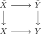
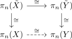

acyclic map and isomorphism on pi_1 as weak equivalence
Proposition
Let $f: X \rightarrow Y$ be an acyclic map which is an isomorphism on $\pi_1$. Then $f$ is an equivalence.
Proof
Let $\tilde{X}, \tilde{Y}$ be the universal covers. by acyclic map and universal cover the map
\begin{align*}
\tilde{X} \rightarrow \tilde{Y}
\end{align*}
is an isomorphism on singular homology.
Thus by homology isomorphism between simply connected spaces as weak equivalence.
Hence consider the diagram

On higher homotopy groups we get

On $\pi_1$ the map $f: X \rightarrow Y$ is by assumption an equivalence.